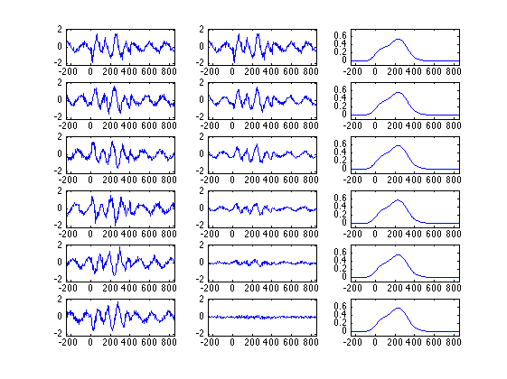
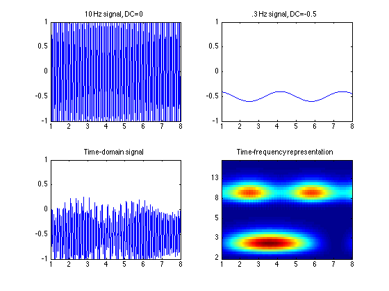
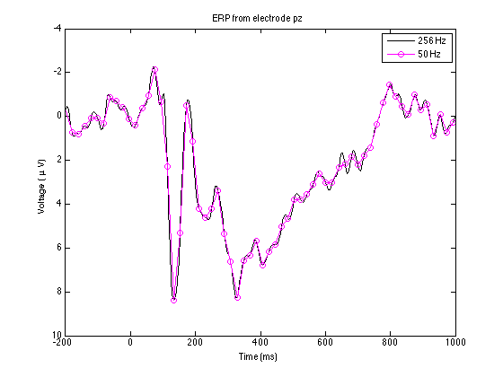

The code associated with the book:
Analyzing Neural Time Series Data: Theory and Practice (Issues in
Clinical and Cognitive Neuropsychology) by Mike X Cohen, MIT Press,
2014
is freely available at Mike X Cohen's web site which also contains
links to where the book may be purchased at amazon.com or MIT Press:
http://mikexcohen.com/book/index.html
The code is specifically at this link:
http://mikexcohen.com/book/AnalyzingNeuralTimeSeriesData_MatlabCode.zip
These pages were accessed on July 25th, 2017.
"Using the code without following the book may lead to confusion,
incorrect data analyses, and misinterpretations of results.
Note that the code is meant to accompany the book, and is thus best
understood by going through the code while reading the book.
Mike X Cohen assumes no responsibility for inappropriate or incorrect
use of this code. "
Running the chapter2.m code, for example, produces the following
images:

Figure 2.1

Figure 2.2

Figure 2.3